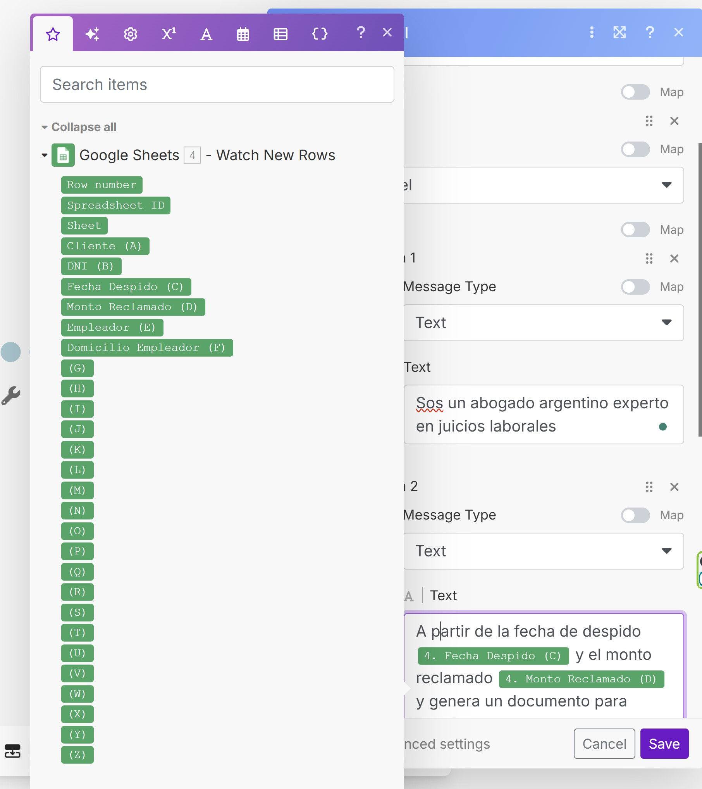
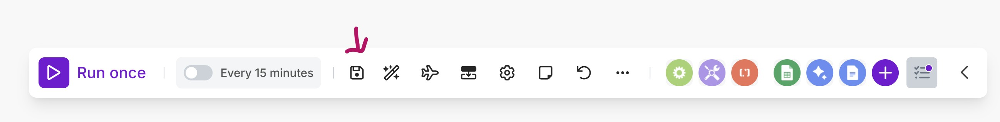

3) Prueba y activación
Run once para verificar: a partir del google sheet que genere el reclamo.
Para dejarlo activo, guarda, vuelve a Scenarios (ver en el Panel de Control a la izquierda) y pone en ON el escenario.

Entrada en Google Sheets y salida Google Docs. En medio se agrega un módulo en el que Gemini hace algún trabajo.
La guía mostrará solo los pasos relevantes.
Agrega Google Sheets → Watch rows. Conecta tu cuenta, elige archivo y pestaña (p. ej., Form Responses 1).
{"system": "Eres un abogado especializado en ...",
"user": "Realiza un contrato con los datos...."
Ejemplo de salida texto (opcional, si configuras el modelo para devolver texto):
{
"titulo": "Contratos sobre..",
}
Puedes usar los datos del Google Sheet seleccionando la columna correspondiente
Usa Google Docs. Puedes usar el directo que es "Create a document" o "Create a document from a template". En este último caso deberías tener el template armado para completar los placeholders ({Nombre}, {Hechos}, etc.).
En este ejemplo se usó "Create a document", con los siguientes parámetros.
No te olvides de guardar tu escenario antes de dar "Run once"
Para dejarlo activo, guarda, vuelve a Scenarios (ver en el Panel de Control a la izquierda) y pone en ON el escenario.